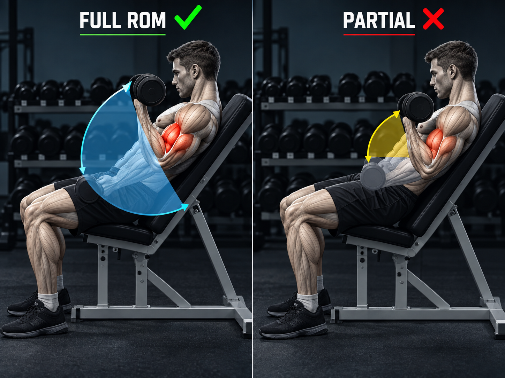

Hypertraining / Guide
Complete guide to muscle building and healthy nutrition
Performing exercises through full range of motion is crucial for hypertrophy. When a muscle is fully stretched under load, greater microdamage and activation of anabolic pathways occur.

"Reps in Reserve" (RIR) is the number of repetitions you could still perform. Train with RIR 1-3 for maximum growth stimulation.
Set 1:
50% load (12 reps)
Main Sets:
100% load (RIR 1-3)
Estimate daily maintenance calories, then split them into protein, fats and carbohydrates.
Soy Products: Contain all essential amino acids. Soy isoflavones may support skin health and do not negatively affect hormone levels in healthy individuals.
Chart: Protein benefits depending on intake (estimated). Increased protein consumption above 1.7 g/kg does not linearly bring greater benefits.
Why important? Support absorption of vitamins A, D, E, K, hormone production, brain and heart health. Omega-3 has anti-inflammatory effects.
GI is a 0-100 scale showing how quickly carbohydrates from a given product raise blood glucose levels. Low GI products cause a slower, more stable sugar rise, which is beneficial for:
Tip: Combining carbohydrates with protein and fats slows absorption and lowers the effective GI of a meal. Fiber also slows digestion.
3–5 meals a day keeps blood sugar steady, so you never arrive at dinner starving. Going 6+ hours without food is what triggers most evening binges.
Protein slows digestion and has the highest thermic effect, so it keeps you full longest. Anchor every meal with 25–40 g — a palm-and-a-half of meat, fish, eggs or dairy.
Fiber adds bulk with almost no calories — start meals with vegetables or salad. Aim for 25–35 g a day; your stomach registers volume, not calories.
Thirst disguises itself as hunger — drink a large glass of water and wait 15 minutes before a second helping. Target about 35 ml per kg of bodyweight daily.
One short night raises ghrelin (hunger) and lowers leptin (fullness) — people eat roughly 300 kcal more the next day. Sleep is the strongest legal appetite suppressant.
Caffeine plus saponins gently blunt appetite for a few hours — useful mid-morning or pre-workout. Keep it before noon; one bad night of sleep will spike hunger far more than mate ever suppresses.
Compressing eating into 8–10 hours removes a whole meal occasion, which makes a deficit effortless for some. Skip it if fasting makes you binge afterwards — it is a tool, not a requirement.
Satiety signals need about 20 minutes to arrive — eat slowly, without screens, and stop at 80% full. Fast eaters consistently overeat by 10–15%.
Starting with vegetables and protein flattens the blood-sugar spike, so you naturally eat less of the starchy part. Same plate, fewer calories, no willpower needed.
Total bans end in weekend binges — reserve 10–20% of calories for foods you enjoy. A diet you follow for a year beats a perfect one you quit in February.
One of the most well-researched supplements. Helps muscles produce energy during intense effort.
Dosage: 3-5g daily
Convenient way to supplement daily protein needs.
Myth check — the "anabolic window": meta-analyses (Schoenfeld & Aragon 2018; Morton et al. 2018) show total daily protein (1.6–2.2 g/kg) drives nearly all growth — eating protein within a few hours around training is plenty. No need to sprint for a shake within 30 minutes.
Most growth hormone is released in deep sleep, and one short night measurably lowers testosterone and next-day performance. Treat 7–9 hours as part of the program, not a luxury — no supplement compensates for chronic short sleep.
Training is the stimulus; muscle is built between sessions. Give each muscle about 48 hours before training it hard again — 2–4 sessions per week per muscle group is plenty, and protein synthesis does its work on the days off.
When lifts stall for 2+ weeks, joints ache, or motivation dies, take an easy week at about 50% volume with the same exercises. Planned deloads prevent forced ones — injury or burnout costs months, a light week costs nothing.
Recovery means rest from hard training, not from movement. Walks and 8–10k daily steps boost blood flow, clear soreness faster, and add calorie burn without impairing recovery.